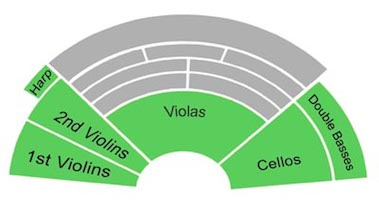
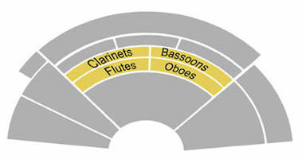
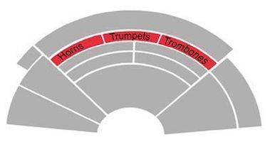
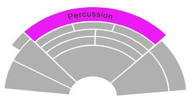

| Instruments: | Violin, viola, cello, double bass and harp |
| Traits: | The family with the largest number of players in the orchestra. All of its instruments produce sound from vibrating strings. |
| Position: | At the front of the orchestra.  |
| Description: | A four-stringed instrument made of many pieces of wood glued together. The body is hollow, thus becoming a resonating box for the sound. The strings are made of animal gut, nylon, or steel and are wrapped around pegs at one end and attached to a tailpiece at the other. Stretching or loosening the strings produce different pitches. The violin is the soprano voice in the string family. |
| How to play: | Hold the violin under the chin, resting it on the shoulder. Use a bow to draw across the strings with one hand while pressing down on the strings with the other hand, or pluck the strings with the fingers. |
| Listen: | |
| Watch: |
| Description: | A viola looks exactly like a violin but is slightly larger. It is tuned five notes lower than a violin. It is the alto voice in the string family. |
| How to play: | Hold the viola under the chin, resting it on the shoulder. Use a bow to draw across the strings with one hand while pressing down on the strings with the other hand, or pluck the strings with the fingers. |
| Listen: | |
| Watch: |
| Description: | A cello looks like a violin with a steel rod on its bottom part. It is larger than a viola. It is the tenor voice in the string family. |
| How to play: | Hold the cello between the knees, resting the rod on the floor. Use a bow to draw across the strings with one hand while pressing down on the strings with the other hand, or pluck the strings with the fingers. |
| Listen: | |
| Watch: |
| Description: | A double bass looks exactly like a violin but is larger than a cello. It has sloping shoulders, instead of rounded shoulders like the other string instruments, and sometimes can have five strings instead of four. It is the bass voice in the string family. |
| How to play: | Hold the double bass between the knees, resting the end rod on the floor. Use a bow to draw across the strings with one hand while pressing down on the strings with the other hand, or pluck the strings with the fingers. |
| Listen: | |
| Watch: |
| Description: | Unlike the other instruments in the string family, the harp has about 45 strings stretched across its tall triangular frame. There are seven pedals at the bottom that adjust the length of the strings to produce different notes. |
| How to play: | Rest the harp on one shoulder. Pluck or stroke the strings with the fingers of both hands while using the feet to step on the pedals. |
| Listen: | |
| Watch: |
| Instruments: | Flute, piccolo, clarinet, oboe, bassoon, and saxophone |
| Traits: | The family name comes from the wooden body of its intruments, although modern versions are usually made of metals or combination of wood and metals. All of its instruments produce sound from vibrations created when air is blown across the top of an instrument, across a single reed, or across two reeds. A reed is a small piece of cane clamped to a mouthpiece. |
| Position: | At the middle-front of the orchestra, right behind the strings and in front of the brass.  |
| Description: | The flute looks like a narrow tube with a row of holes covered by keys along one side. Traditionally made of wood, modern flutes are now made of silver or gold. Unlike other woodwind instruments, the flute has no need of a reed for its mouthpiece. |
| How to play: | Hold the flute horizontally with both hands and lay the lips over the mouthpiece. Blow air accross the hole in the mouthpiece and press down on the keys with the fingers. |
| Listen: | |
| Watch: |
| Description: | The piccolo is a narrow tube with a row of holes covered by keys along one side. It is much smaller in size than the flute, and is usually made of silver or wood. Like the flute, the piccolo has no need of a reed. It also has a higher pitch than that of a flute. |
| How to play: | Hold the piccolo horizontally with both hands and lay the lips over the mouthpiece. Blow air accross the hole in the mouthpiece and press down on the keys with the fingers. |
| Listen: | |
| Watch: |
| Description: | The clarinet is made of wood and is a tube with a bell-shaped bottom. It uses a single reed in the mouthpiece and has metal keys along one side. |
| How to play: | Hold the clarinet vertically with both hands and hold the reed between the lips. Blow air through the reed and the mouthpiece and press down on the keys with the fingers. |
| Listen: | |
| Watch: |
| Description: | The oboe is a wooden tube with metal keys along one side. It uses a double reed in place of the mouthpiece. |
| How to play: | Hold the oboe vertically with both hands and hold the double reed between the lips. Blow air through the reed and press down on the keys with the fingers. |
| Listen: | |
| Watch: |
| Description: | The bassoon is a wooden tube with metal keys along one side. It has a double reed attached to a narrow metallic tube that goes into the body. It has the lowest sound out of all woodwind instruments. |
| How to play: | Hold the bassoon at a vertical 45 degree angle away from the body with both hands. Hold the double reed between the lips. Blow air through the reed and the narrow tube and press down on the keys with the fingers. |
| Listen: | |
| Watch: |
| Description: | Even though the saxophone is made of brass, it is still considered a woodwind instrument because it uses a single reed mouthpiece. It consists of a conical tube with metal keys along one side, a U-bend and a bell-shaped end. The saxophone is more powerful than most woodwinds, and more versatile than most brass instruments. |
| How to play: | Wear the loop over the neck and hold the saxophone vertically with both hands. Hold the reed between the lips. Blow air through the reed and the mouthpiece and press down on the keys with the fingers. |
| Listen: | |
| Watch: |
| Instruments: | Trumpet, trombone, French horn, and tuba |
| Traits: | The family name comes from the metallic body of its intruments. All of its instruments produce sound from vibrations of the player's lips combined with a steady stream of breath through the cup or funnel-shaped mouthpiece. The brass family is the loudest in the orchestra. |
| Position: | At the middle-back of the orchestra, right behind the woodwinds and in front of the percussion.  |
| Description: | The trumpet looks like a length of brass tubing ending in a bell with three valve keys on one side. It is the highest sounding instrument in the brass family. |
| How to play: | Hold the trumpet horizontally with both hands so that its mouthpiece is close to the lips. Adjust the opening of the lips while blowing air through the mouthpiece and press down on the keys with the fingers on the right hand. |
| Listen: | |
| Watch: |
| Description: | The trombone is a length of brass tubing ending in a bell. Its mouthpiece is larger than that of a trumpet, which gives the instrument a more mellow sound. Instead of valves, the trombone has a slider which changes the length of its tubing. |
| How to play: | Hold the trombone horizontally with the left hand so that its mouthpiece is close to the lips. Adjust the opening of the lips while blowing air through the mouthpiece and adjust the slider with the right hand to produce different pitches. |
| Listen: | |
| Watch: |
| Description: | The French horn is basically a length of narrow brass tubing wound into a circle and ending in a large bell. It has valve keys just like a trumpet. |
| How to play: | Hold the French horn by its bell-shaped end with the right hand inserted in it and support the other end with the left hand. Make sure that its mouthpiece is close to the lips. Adjust the opening of the lips while blowing air through the mouthpiece and press down on the keys with the fingers on the left hand as well as moving the right hand inside the bell. |
| Listen: | |
| Watch: |
| Description: | The tuba has the longest brass tubing wound into a long rectangle and ending in a large bell. It is the lowest sounding instrument in the brass family. |
| How to play: | Hold the tuba upright with both hands so that its mouthpiece is close to the lips. Adjust the opening of the lips while blowing air through the mouthpiece and press down on the valve keys with the fingers on the right hand. |
| Listen: | |
| Watch: |
| Instruments: | Timpani, snare drums, bass drums, gong, cymbals, chimes, triangles, maracas, xylophones, and piano. |
| Traits: | Percussions provide a variety of rhythms. There are two types--tuned and untuned. All of its instruments produce sound by striking solid materials with the hand or a stick, or by shaking or rubbing. Unlike the other instrument families, a musician in the percussion group can play many different instruments in a single musical score. |
| Position: | At the back of the orchestra.  |
| Description: | The timpani is constructed of a large copper bowl with a drumhead made of calfskin or plastic stretched across the top. Pitch varies by drum sizes. It is the first type of drums to be used in the orchestra. |
| How to play: | Strike the timpani with felt-tipped wooden sticks or mallets held in both hands. Adjust the pitch by tightening the drumhead with keys and stepping on the foot pedals. |
| Listen: | |
| Watch: |
| Description: | The snare drum has two calfskin or plastic drumheads stretched tightly over a hollow metal cylindrical frame. The bottom head has catgut or metal wires called snares stretched tightly across it. When striking the snare drum on the top head, the snares produce a sharp rattling sound as they vibrate against the bottom head. |
| How to play: | Strike the snare drum with wooden drumsticks held in both hands. |
| Listen: | |
| Watch: |
| Description: | The bass drum has two calfskin or plastic drumheads stretched tightly over a hollow metal cylindrical frame. It is the largest drum in the percussion family and is played on its side, so that both heads can be struck. |
| How to play: | Balance the bass drum between the knees. Strike the bass drum with wool-covered wooden sticks or mallets held in both hands. |
| Listen: | |
| Watch: |
| Description: | A gong, also called a tam-tam, is a large disc-shaped brass plate that hangs suspended from a metal pipe. Its size can range from just a few inches to huge ones that are larger than a person. In the orchestra, the gong's untuned sound can be a loud crash or a low rumble. |
| How to play: | Strike the gong with a wool-covered wooden stick or mallet held in one hand. |
| Listen: | |
| Watch: |
| Description: | Cymbals are made from two large, slightly concave brass plates, fitted with leather hand straps. They are shaped so that when they are crashed together, only the edges touch. Different sized cymbals produce a wide range of sounds. |
| How to play: | Hold each cymbal in one hand and strike them together. Cymbals can also be played by striking with drumsticks or mallets while suspended on a string or stand. |
| Listen: | |
| Watch: |
| Description: | Chimes consist of a set of 12 to 18 metal tubes hung from a metal frame. Each metal tube has a different length and tubes with longer length produce lower pitches. The chimes, or tubular bells, are struck with a mallet and sound like church bells when played. The |
| How to play: | Strike the chimes with wooden sticks or mallets held in both hands. |
| Listen: | |
| Watch: |
| Description: | The triangle looks like a narrow steel tube wound into the shape of a triangle. It has a leather strap. |
| How to play: | Hold the triangle in one hand by its strap and strike it with a small steel beater held in the other hand. |
| Listen: | |
| Watch: |
| Description: | Maracas are basically rattles, often made from gourds, filled with dried seeds, beads or even tiny ball bearings that make them rattle. They can also be made of wood or plastic. The sound they make depends on what they're made of. |
| How to play: | Hold a maraca by its handle in each hand and shake them along based on the rhythm of the music. |
| Listen: | |
| Watch: |
| Description: | The xylophone is made of hardwood bars in different lengths set horizontally on a metal frame. The notes of the xylophone are laid out much like the piano. |
| How to play: | Strike the xylophone with hard mallets held in both hands. |
| Listen: | |
| Watch: |
| Description: | Unlike other percussion instruments, the sound of the piano is not produced by the vibration of a membrane or solid material. However, it is one of the keyboard instruments, which are also classified as percussion instruments because they are played by striking the keys. When a player presses the keys, this causes small hammers to strike the strings inside the instrument and produce musical sounds. |
| How to play: | Press the keys with both hands to produce sound while stepping on the pedals with the feet to sustain the notes. |
| Listen: | |
| Watch: |
Congratulations! You have finished all lessons. Take this quiz to get a recommendation on which instrument you should learn to play.